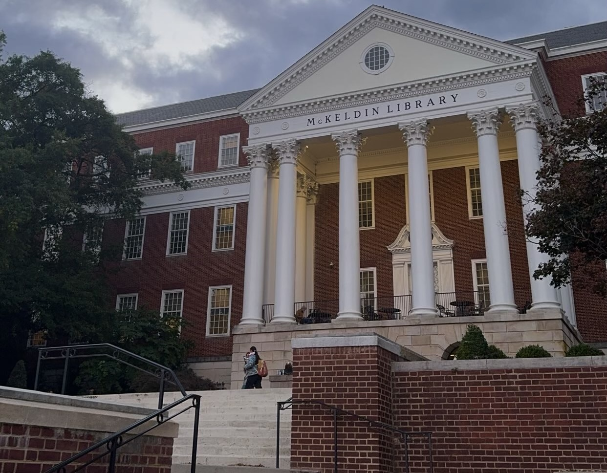

BY MACKENZIE PRINCE
Out-of-state students at the University of Maryland say they wish they had better financial aid and merit options. Photo by Mackenzie Prince.
The University of Maryland’s (UMD) tuition for the 2026-2027 academic year is expected to increase for College Park students, according to a June 2025 agenda released by the University System of Maryland (USM).
This decision comes after the UMD Board of Regents approved the Maryland state fiscal budget earlier this past summer. Governor Wes Moore and the General Assembly also reviewed and approved the budget.
In a letter addressed to his colleagues, UMD’s President Darryll J. Pines said this proposal could significantly impact the university. He wrote that the campus is expected to lose five percent, or $42 million, in funding, and he is requesting a tuition increase.
“We recognize the challenges and stress that the current budget environment represents for our entire community,” Pines wrote in the June 13, 2025 letter.
While the university’s financial aid office has yet to announce set prices, the USM agenda cites a more than 4% increase in tuition for in-state students and 2% increase in tuition for out-of-state students.
The UMD Financial Aid Office did not respond to repeated requests for further comment.
This rising cost of tuition is not unfamiliar to the UMD community; since 2017, there has been a substantial increase in the overall cost of attendance. According to the university’s finance website, tuition has risen about 15% for in-state students and 27% for out-of-state students.
This price point peaked in 2025, reaching $11,809 and $41,186 for in-state and out-of-state students, respectively.
However, with tuition continuing to grow each year, students are left to wonder how they are left to financially support their education, particularly, out-of-state students.
According to a 2024 IRIS report from USM, there are about 65.41% of in-state students compared to 34.59% of out-of-state students at UMD. However, the distribution of government aid is not proportional. About 73.01% was received by in-state students while about 25.54% of aid was distributed to out-of-state students, despite higher tuition costs.
For some out-of-state students, like Abi Limbird, a sophomore English and film and media studies double major, this raises concerns about how well the university supports their financial needs. Despite hopes of receiving some form of merit aid, Limbird said she found the options to be limited.

Some out-of-state students look to the university for scholarship options and recieve little answers. Photo by Mackenzie Prince.
“I definitely think [UMD should] be more transparent with the amount of out-of-state students [who will be] receiving merit in the fall,” Limbird said. “That was something that felt very confusing and misleading to me, as a freshman connection student.”
The university’s Freshman Connection program accepts both in-state and out-of-state students for spring admission. However, students can still complete up to 17 credits during the fall semester, just from 3p.m. to 9p.m. Monday through Thursday, according to UMD’s admissions website.
Limbird said most freshman connection students she crossed paths with were out-of-state students and like her, were restricted from qualifying for any merit-based scholarships before second semester.
According to the university’s admissions website, UMD offers three merit-based scholarships for all-incoming UMD students who apply by the early action deadline: Banneker Key Scholarship, President’s Scholarship and Dean’s Scholarship.
Ryan McNamee, a sophomore neuroscience major, is a Banneker Key Scholarship recipient and in-state student from Baltimore County.
McNamee said she saw that many of her fellow scholarship recipients were also in-state students. She said this felt ironic since in-state students are already paying a cost-reduced rate, which is usually a main reason her Maryland peers enroll at the university.
“It’s also really common for [in-state] people to go here because it’s just hands-down the cheapest option,” McNamee said. “No amount of scholarship that I was going to get at any other school…would have made me financially able to [attend elsewhere].”